把 14B video diffusion 模型改造成同时生成未来视频和动作的 World Action Model,用 inverse-dynamics 视角让 video prior 直接成为 policy,并通过系统优化把它压到 7Hz 实时闭环。
问题
要解决什么：现有 VLA 只能在语义层泛化(换物体、换指令),但换一个没见过的动作/技能(如未训练过的解鞋带)就失败。作者要解决的是:如何让机器人策略真正泛化到未训练过的 motion 和 environment,同时能利用异质、非重复的真实数据。
为什么 prior work 不够：VLA 从 VLM 初始化,继承了 web 的语义先验,但没有继承物理动态先验——它学到的是 observation->action 的映射,缺'动作会让世界怎么变'的建模。所以它必须靠大量重复示教覆盖每个技能。之前的 WAM(如 BagelVLA、Cosmos-Policy)虽然用了 video diffusion,但要么只做关键帧/cascaded,要么没解决实时推理,要么没系统验证数据多样性与跨本体迁移。
输入 / 输出
输入
| 名称 | 类型 | 说明 |
|---|---|---|
| visual context | image/video | 当前与历史观测;多视角在通道维拼接为单帧;经 VAE 编码为 latent |
| language instruction | text | 经文本编码器(训练时冻结)编码为条件 |
| proprioceptive state | vector | 本体感受状态,经 state encoder(新增模块)编码 |
输出
| 名称 | 类型 | 说明 |
|---|---|---|
| future video latents | latent | 未来 K=2 个 latent 视频帧(每 chunk) |
| action chunk | continuous | H=48 (AgiBot, 30Hz) 或 H=24 (DROID, 15Hz) 步连续动作,表示为相对关节位置 |
控制频率：推理 ~7Hz(150ms/chunk);AgiBot 控制频率 30Hz、chunk 跨度 1.6s;DROID 15Hz、chunk 同样 1.6s
输入拼接 protocol
<bos_context>[VAE(o_{1:M}) = (C_1, A_1), ..., (C_{k-1}, A_{k-1})]<eos_context><bos_lang>TextEnc(c)<eos_lang><bos_state>StateEnc(q_k)<eos_state><bos_chunk>[noisy z_k^t, noisy a_k^t]<eos_chunk>
逐 token 解释:注意:多视角在图像层就已在通道维拼成单帧再过 VAE,不是序列拼接;text 是 cross-attention 而非 token 拼接;真正做序列拼接的是 chunk 级的 [video, action] 对。
数据集
| 数据 | 规模 | 备注 |
|---|---|---|
| AgiBot G1 自采(主) | ~500h | 7193 episodes,22 个真实环境(家、餐厅、超市、咖啡店、办公室),平均 4.4 分钟/episode、42 subtasks/episode,强调多样非重复 |
| DROID | 公开数据集 | Franka 单臂,用于验证方法在开源异质数据上同样有效,并保证可复现 |
| YAM robot video-only | 20 min | 72 轨迹/9 任务,robot-to-robot 跨本体迁移,只用视频不用动作标签 |
| Human egocentric video-only | 12 min | 72 轨迹/9 任务,human-to-robot 跨本体迁移,只用视频 |
| Post-training data | 33h+12h+40h | 叠衣服/水果打包/收餐桌三个下游任务微调 |
架构（摘要）
主干与结构
backbone：Wan2.1-I2V-14B-480P(image-to-video diffusion, 14B)
参数：14B(冻结 text encoder / image encoder / VAE;更新 DiT + 新增 state/action encoder/decoder)
类型：autoregressive DiT + flow matching(chunk-wise, teacher forcing)
关键组件
- VAE:把图像/视频编码到 latent(冻结,继承自 Wan2.1)
- Text encoder:编码语言指令(冻结)
- State encoder:把本体感受编码(新增,最小参数)
- Action encoder/decoder:把连续动作进出 latent(新增,最小参数)
- Autoregressive DiT 主干:对 [video latent, action latent] 联合做 flow-matching 去噪,chunk 间 teacher forcing,KV-cache 推理
- 多视角处理:把多个视角在通道维拼成一帧,不改 backbone
为什么这样设计
保留 video diffusion 的物理先验(只动最小参数);AR 结构能保原生帧率、避免双向模型因 subsample 造成 video-action 错位;chunk-wise + KV-cache 让长上下文(6.6s)一次前向搞定;闭环时用 GT 观测替换 KV-cache 里的预测帧,消除 AR 的误差累积——这是 WAM 相对纯视频生成的独有优势。
数值 sense
| 项 | 值 |
|---|---|
| DiT 规格 | 14B, hidden_dim=5120, 40 layers × 40 heads, ffn_dim=13824 |
| 分辨率 | 480P (面积固定,宽高比随输入,典型 832×480) |
| VAE | Wan 3D causal VAE; 空间 8× 下采样 (832×480→104×60), 时间 4× 下采样 (4 raw 帧→1 latent 帧), latent channel=16 |
| 每帧 latent 维 | ~104×60×16 ≈ 1.0e5 维/latent 帧 |
| Chunk | K=2 latent 帧 = 8 raw 帧; 视频 5FPS → 1.6s/chunk; AgiBot: 动作 30Hz/H=48, DROID: 动作 15Hz/H=24 |
| 上下文 | M=4 chunks = 8 latent 帧 = 33 raw 帧 = 6.6s 视觉记忆 |
| 动作 | 连续相对关节位置; AgiBot G1 双臂移动平台(自由度~十几到二十几), DROID Franka 7-DOF+夹爪 |
| 训练 | 100K steps × global batch 128 (AgiBot 与 DROID 都是); 全参数更新 (LoRA 试过不行); 冻结 text/image encoder + VAE |
→ 详见 Architecture tab。
关键结果
| 指标 | 值 | 最强 baseline | setup |
|---|---|---|---|
| Seen tasks avg task progress | 62.2% | 27.4% (best pretrained VLA) | AgiBot G1, unseen env+objects |
| Unseen tasks avg task progress | 39.5% | 16.3% (pretrained VLA) | AgiBot G1, 10 个训练中未出现的任务 |
| Unseen tasks success rate | 22.5% | 12.5% (GR00T N1.6 pretrained) | DROID-Franka |
| Cross-embodiment (Robot2Robot) | 55.4% (从 38.3% 提升) | — | 20min YAM video-only |
| Cross-embodiment (Human2Robot) | 54.3% (从 38.3% 提升) | — | 12min human egocentric video-only |
| Few-shot 新本体适配 | 30min play data 迁移到 YAM 并保留 zero-shot 泛化 | — | 55 轨迹/11 任务 |
| Inference latency | 150ms (7Hz) | 5.7s (naive) | GB200, 全部优化 + Flash |
| Flash 1-step vs 4-step | 74% task progress (1 step) | 83% (4 step) / 52% (naive 1 step) | Table bussing |
Insights
- WAM 把 policy 学习从 'observation->action 的稠密模仿' 转成 'inverse dynamics'——动作不再从头学,而是从预测的视觉未来里提取。这是它能用异质、非重复数据而 VLA 不能的根本原因(p3)。
- 失败主要来自 video 预测错,而不是 action 提取错——意味着改进 video backbone 会直接转化成 policy 改进(p13)。这是 WAM 路线最有力的 scaling 论证。
- 数据多样性 > 数据重复性:同样 500h,diverse 比 repetitive 在 PnP Easy 上从 33% 到 50%(p17)。这颠覆了 VLA 时代'每个任务多重复'的直觉。
- WAM 对模型规模更敏感:14B vs 5B 在 PnP Easy 是 50% vs 21%,小模型会视觉幻觉传导到动作;而 VLA 即使放大到 14B 在 diverse data 上仍是 0%(p17)。
- 闭环用 GT 观测替换 KV-cache 里的预测帧,消除了 AR 视频生成的 compounding error——这是 WAM 作为 policy 比纯视频生成强的地方,也是它能做实时控制的关键(p6)。
vs 同类工作
- vs Cascaded WAM(如 BagelVLA):BagelVLA 先预测关键帧再生成 action,DreamZero 是 joint 端到端,video-action 对齐更紧;且 BagelVLA 的 RFG 1.23s/chunk,DreamZero 150ms。
- vs Modular MPC(如 Cosmos-Policy):Cosmos 用 world rollout + value scoring + MPC 做决策时规划,DreamZero 不做 test-time search,直接 joint 出 action,因此能 7Hz 而不是被候选数/rollout horizon 拖慢。
- vs 之前的 video-action joint 工作(如 UniPi 类):DreamZero 系统验证了 AR 架构、数据多样性、跨本体迁移,并第一次把 14B video diffusion 压到实时闭环;之前的工作大多停在仿真或非实时。
- vs latent world model(如 V-JEPA2/Dreamer):latent 模型建模 p(s_{t+1}|s_t,a_t) 是前向动力学,部署需要 goal-conditioned planning 或搜索;WAM 直接建模 p(o,a|history) 一次性出动作,不需要 test-time 优化,所以能实时。
局限
- 论文自承:仍是 System 1,视觉记忆只有 6.6s,长程推理需要 System 2 planner 或更长上下文(p18)。
- 论文自承:高精度任务(亚厘米级,如钥匙插入、精密装配)仍是 behavior cloning 的通病,diverse pretraining 反而稀释了这类密集示教(p18)。
- 论文自承:比 consumer GPU 上的 VLA(20Hz+)仍贵,7Hz 依赖 2x GB200;小 video backbone 是否保泛化未知(p18)。
- 论文自承:跨本体迁移成功率仍 moderate,只是 'early signal',需要更大规模人类视频验证(p16)。
- 我们读出:跨本体实验里 YAM 和 AgiBot 都是双臂 parallel gripper,形态接近,迁移收益部分来自此;人类视频收益是否在形态差异更大时仍成立,论文未证。
- 我们读出:所有结果都是 unseen env+objects,但 task 维度上'seen'和'unseen'的边界依赖人工定义(动作+物体类型),有主观空间。
- 我们读出:38x 加速里有几项(DiT caching、NVFP4 量化)不是数学等价,论文说'minimal quality loss'但未给完整精度对照。
可复现性
- code：https://github.com/dreamzero0/dreamzero
- weights：开源(论文声明)
- sim_benchmark：PolaRiS 与 Genie Sim 3.0
- real_eval：AgiBot G1(4 台机器人) + Franka(DROID)
DreamZero 架构详解
> 配套 card.json。下面先用一张 Mermaid 图把数据流和模块关系画清,再用文字把每个组件讲透。所有数字都来自论文(页码标注)。
1. 总体数据流(训练 vs 推理)
flowchart LR
subgraph Inputs
V["视觉观测<br/>(多视角,通道拼接)"]
L["语言指令"]
Q["本体感受 state"]
end
subgraph Encoders
VAE["VAE(冻结)<br/>image/video -> latent"]
T["Text encoder(冻结)"]
SE["State encoder(新)"]
end
subgraph Backbone
DiT["Autoregressive DiT 14B<br/>flow matching, chunk-wise<br/>KV-cache 推理"]
end
subgraph Heads
VD["Video decoder<br/>(latent -> frame)"]
AD["Action decoder(新)<br/>latent -> H 步连续动作"]
end
V --> VAE --> Z["video latent z"]
L --> T --> C["text cond c"]
Q --> SE --> AQ["action latent input a"]
Z --> DiT
C --> DiT
AQ --> DiT
DiT --> Zout["未来 video latent z_1..K"]
DiT --> Aout["action chunk a_1..H"]
Zout --> VD
Aout --> AD训练时:对每个 chunk k,把 clean context {(z_j, a_j)}_{j 推理时:先 prefill context(初始观测)的 KV-cache,然后循环——对 noisy [z_0, a_0] 做 N 步去噪得到一个 chunk 的 video+action;执行动作的同时,把真实观测回填 KV-cache,继续下一个 chunk(p6, p8 Algorithm 2)。 最大上下文 = M=4 chunks × K=2 = 8 latent 帧 = 33 raw 帧 = 6.6 秒(p21)。 这是论文最有论证的一条架构选择(p7, Appendix B)。 Bidirectional 的问题:它要求固定长度序列,长程示教里语言指令通常只对应任务区间的一部分。如果不 subsample,模型生成的视频只覆盖任务片段,语言和视频错位;如果 subsample,在闭环里从任务中段(如 T=20)采样会扭曲原生帧率,video-action 对齐就崩了(Figure 13)。 AR 的解法:用视频上下文做条件而不是 subsample,既保住语言-视频对应,又保住原生帧率,语言/视频/动作三模态对齐才稳。副作用是 AR 推理因 KV-cache 比 BD 快 3-4x(p17)。 这是 DreamZero 作为 WAM 比纯视频生成器强的地方(p6, p8): 为什么重要:纯 AR 视频生成会 compounding error(越生成越偏)。闭环里每 chunk 用 GT 观测纠正 KV-cache,误差不累积——这是它能做实时控制的根基,也是它配叫 "policy" 而不是 "video generator" 的原因。 最终:5.7s → 150ms → 7Hz(p9-p10 Table 1)。 注意:DiT caching 和 NVFP4 不是数学等价,论文报告 minimal quality loss 但未给完整对照(我们读出的局限)。 标准 DreamZero:video 和 action 共享 timestep t~U(0,1)。few-step 推理时 video 还很噪,但模型训练时学的是"两者同噪声级别",于是 action 从噪声 video 读条件 → 不准。 Flash:训练时把 video 的 timestep 偏向高噪声(t_vid = 1 - η, η~Beta(7,1),E[t_vid]=0.125),action 仍 uniform。让模型专门学"video 还很脏时也能输出干净 action",正好匹配 1-step 推理的真实条件(p9 Figure 5)。 结果(p17 Table 3):1 步推理从 52% → 74%,只比 4 步 baseline(83%)低 9 个点。这是论文里性价比最高的一个工程创新。 这是 WAM 能做 7Hz 实时、search-based 路线做不到的根本原因(p20)。2. 输入/输出契约
方向 名称 类型 说明 输入 视觉上下文 image/video latent 当前+历史观测;多视角在通道维拼成单帧,不改 backbone 输入 语言指令 text 冻结的 text encoder 输入 本体感受 vector 新增 state encoder 输出 未来视频 latent latent 每 chunk K=2 latent 帧 输出 动作 chunk continuous AgiBot: H=48 @30Hz;DROID: H=24 @15Hz;每 chunk 1.6s 数值 sense:模型到底多大
项 值 出处 DiT 14B;hidden_dim=5120;40 layers × 40 heads;ffn=13824 Wan2.1 HF model card 分辨率 480P,面积固定,宽高比随输入(典型 832×480) Wan2.1 VAE Wan 3D causal VAE;空间 8× 下采样(832×480→104×60);时间 4×(4 raw→1 latent);latent channel=16 Wan2.1 vae.py + HF spec 每帧 latent 维 ~104×60×16 ≈ 10 万 推算 Chunk K=2 latent 帧 = 8 raw 帧;视频 5FPS → 1.6s;AgiBot H=48@30Hz,DROID H=24@15Hz 论文 p21 上下文 M=4 chunks = 8 latent = 33 raw = 6.6s 论文 p21 动作 连续相对关节位置;AgiBot G1 双臂移动平台(DOF~十几到二十几),DROID Franka 7-DOF+夹爪 论文 p10-11 训练 100K steps × global batch 128(AgiBot 与 DROID 都是);全参数更新(LoRA 试过不行);冻结 text/image encoder + VAE 论文 p11, p21 3. 为什么选 Autoregressive 而不是 Bidirectional
4. 关键机制:闭环 KV-cache 替换
sequenceDiagram
participant Robot
participant Cache as KV-cache
participant Model as DiT
Robot->>Model: 初始观测 o_init
Model->>Cache: prefill KV(条件帧)
loop 每个 chunk
Model->>Model: 噪声 -> 去噪 -> (z_future, a_chunk)
Model->>Robot: 执行 a_chunk
Robot->>Robot: 真实环境产生 o_new
Robot->>Cache: 用 o_new 的 KV 替换预测帧的 KV
Cache->>Model: 下一 chunk 基于真实上下文生成
end5. 推理加速栈(38× 的拆解)
层级 优化 H100 GB200 baseline naive 1× 1.1× 系统 CFG 双卡并行 1.9× 1.8× 系统 + DiT caching(速度相似时复用) 5.5× 5.4× 实现 + torch.compile + CUDA Graphs 8.9× 10.9× 实现 + kernel/scheduler(cuDNN, GPU 化) 9.6× 14.8× 实现 + NVFP4 量化 — 16.6× 模型 + DreamZero-Flash(解耦 schedule) — 38× 6. DreamZero-Flash 的核心 trick
7. 与其它世界模型路线的根本区别(Appendix A)
路线 建模对象 部署 Latent world model(JEPA2/Dreamer) p(s_{t+1}\ s_t,a_t) 前向动力学 需要 goal-conditioned planning 或搜索 3D 点云 world model(PointWorld) 3D 点流 conditioned on action 需要 MPPI 等显式优化 WAM(DreamZero) **p(o,a\ history)** 联合 直接出动作轨迹,无 test-time 优化
Overview 四大卖点

原文 caption：By jointly predicting video and action, WAMs inherit world physics priors that enable 1) effective learning from diverse, non-repetitive data, 2) open-world generalization, 3) cross-embodiment learning from video-only data, and 4) few-shot adaptation to new robots.
门面图。多种数据源(双臂/单臂/人类第一视角/纯视频/语言/proprio)汇入中间的 DreamZero WAM;下方分别展示 30min play data few-shot 适配新本体、和 zero-shot 泛化到未见任务(解鞋带/按电梯/放橙子进南瓜)。核心信息:WAM 已经能直接当 policy 用,做零样本策略,且能从异质无动作标签数据学。
Video-Action 对齐(成功案例)
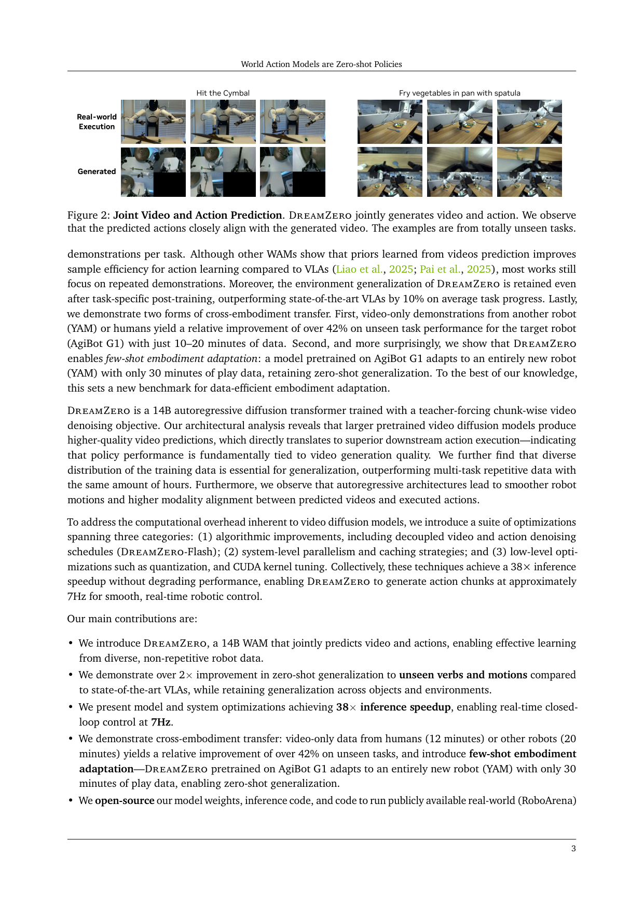
原文 caption：DreamZero jointly generates video and action. Predicted actions closely align with the generated video. Examples from totally unseen tasks.
上行为模型生成的未来视频,下行为实际执行,帧对帧吻合(任务:用锅铲炒蔬菜,训练未见)。支撑核心论断:失败主要来自 video 预测错,不是 action 提取错——说明 video 和 action 对齐很紧。
Free-form 自由测试
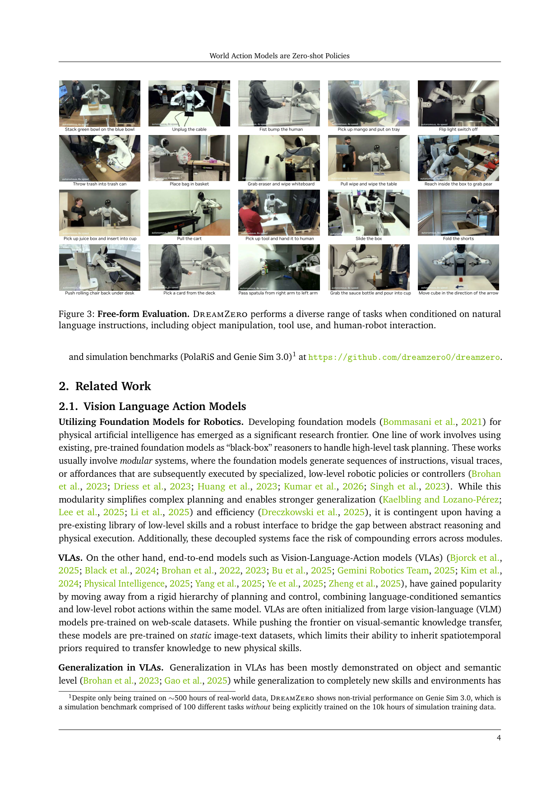
原文 caption：DreamZero performs a diverse range of tasks when conditioned on natural language instructions, including object manipulation, tool use, and human-robot interaction.
18 个自由测试任务的可视化清单(叠碗/扔垃圾/抽牌/双手交接/递工具给人/擦白板/拔电缆/碰拳等)。强调不是在固定任务集过拟合,能跟随自然语言做没见过的操作。100+ 自由测试任务里挑出来的。
Model Architecture(最重要)
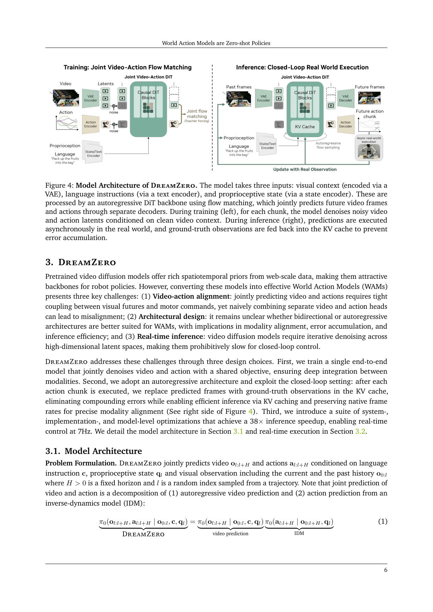
原文 caption：Three inputs: visual context (VAE), language (text encoder), proprio (state encoder). Autoregressive DiT with flow matching jointly predicts video and action. Training: teacher forcing on noisy chunk conditioned on clean context. Inference: GT observations fed back into KV cache to prevent error accumulation.
全文最该看的图。左训练:三路输入→AR DiT(flow matching)→video/action 两路输出,前 chunk clean latent 作上下文,对当前 chunk 的 noisy [z_t,a_t] 联合去噪。右推理:chunk 执行后真实观测回填 KV-cache 替换预测帧,下个 chunk 基于真实上下文生成。同时回答输入怎么拼、video-action 怎么联合、闭环怎么消误差。
Flash 解耦 noise schedule
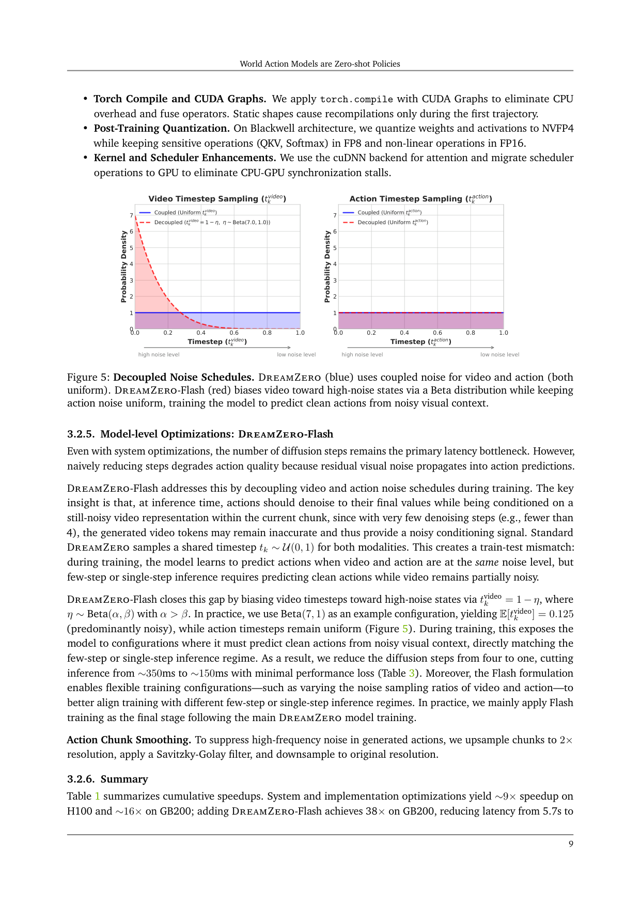
原文 caption：DreamZero (blue) uses coupled uniform noise. DreamZero-Flash (red) biases video toward high-noise via Beta(7,1) while keeping action uniform, training to predict clean actions from noisy visual context.
两子图:video timestep 和 action timestep 采样分布。蓝(标准)都 U(0,1);红(Flash)video 偏高噪声 Beta(7,1) E[t]=0.125,action 仍均匀。设计动机:1-step 推理时 video 还很脏但 action 要从干净 video 读条件——训练时让模型见惯'video 脏时也输出干净 action'。这是 Flash 把 1 步从 52% 拉到 74% 的关键。
AgiBot 数据统计
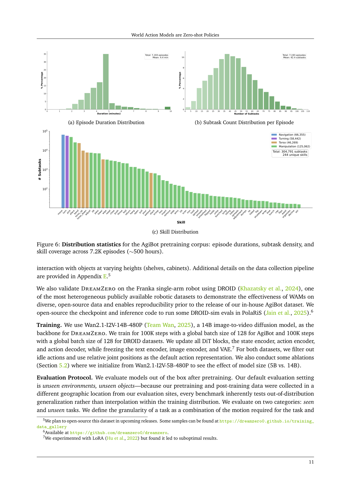
原文 caption：Distribution statistics for the AgiBot pretraining corpus: episode durations, subtask density, and skill coverage across 7.2K episodes (~500 hours).
三子图。(a) episode 时长:7193 个,均 4.4min,长尾到 10min+。(b) 每 episode 子任务数:均 42.4,有的 100+。(c) 技能分布:导航/躯干调整/抓放/工具使用占比。支撑'数据多样性>重复性'——这些 episode 是长程多子任务跨环境真实部署式采集,和'一个任务重复 100 次'完全不同。
评测协议
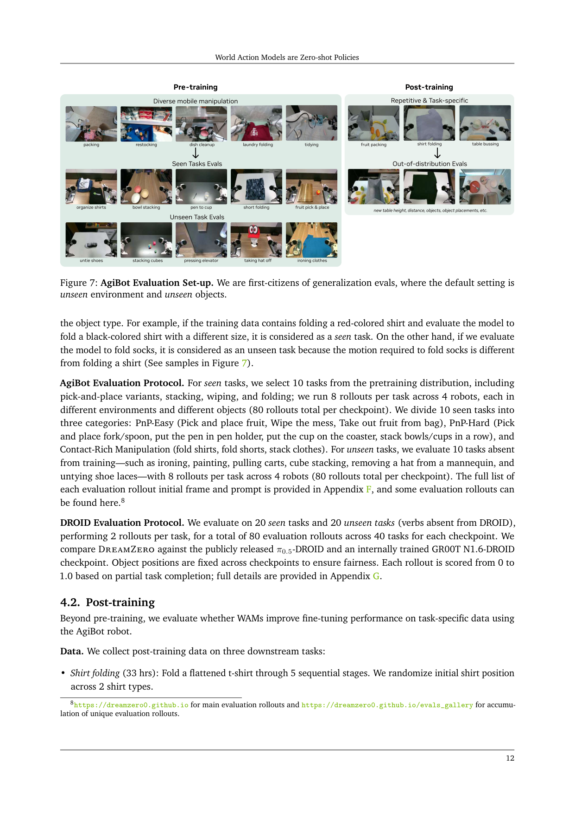
原文 caption：First-citizens of generalization evals: default setting is unseen environment and unseen objects.
训练地与评测地不同地理位置,默认评测即 OOD(unseen env+obj)。三档任务:seen(训练有类似动作,如换颜色叠衣)/unseen(动作完全没见过,如解鞋带/熨衣)/post-training 下游(叠衣/水果打包/收餐桌)。定义了论文所有结果的评测口径——unseen env+obj 是底线不是加分项。
Seen Task 结果
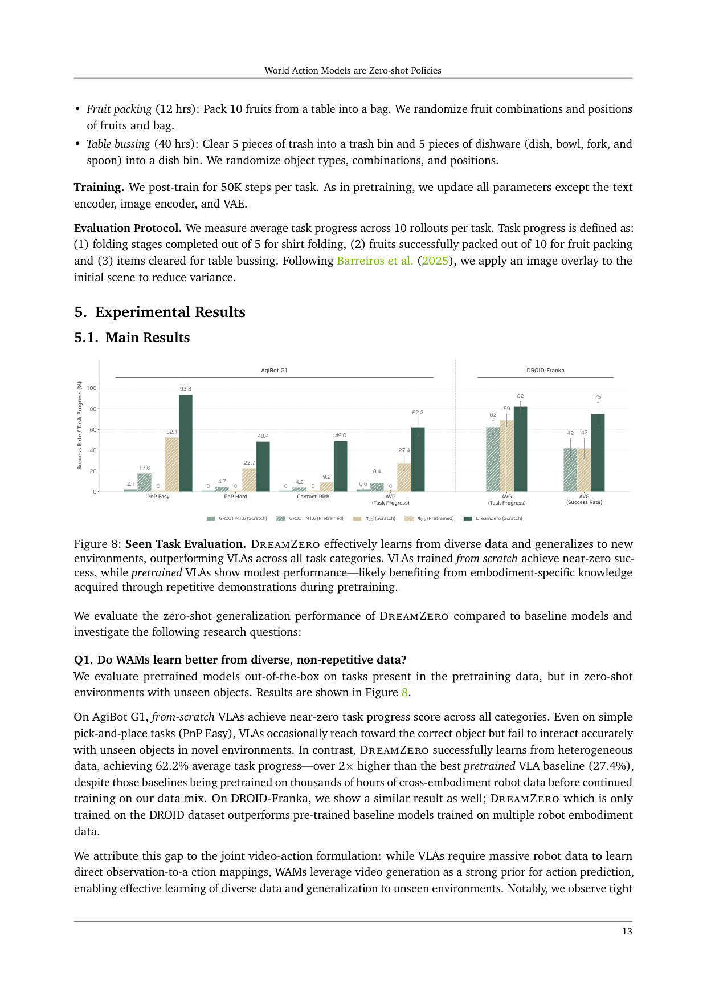
原文 caption：DreamZero effectively learns from diverse data and generalizes to new environments, outperforming VLAs across all task categories. VLAs trained from scratch achieve near-zero success.
分组柱状图,三档任务(PnP Easy/Hard/Contact-Rich)× 5 checkpoint。AgiBot DreamZero 均 62.2%,最好 pretrained VLA 27.4%,scratch VLA≈0。回答 Q1:WAM 能从异质非重复数据学,VLA 不能——即使 VLA 在数千小时跨本体数据预训练过。
Unseen Task 结果
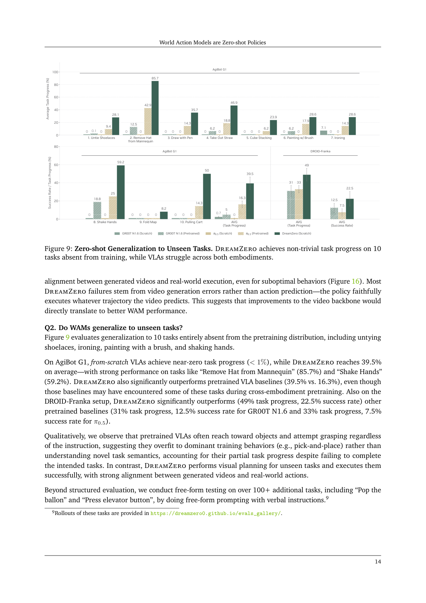
原文 caption：DreamZero achieves non-trivial task progress on 10 tasks absent from training, while VLAs struggle across both embodiments.
10 个训练完全没出现的任务(解鞋带/摘帽/画画/握手/拉车等)。AgiBot DreamZero 39.5%,pretrained VLA 16.3%;DROID success rate DreamZero 22.5%,GR00T 12.5%,π0.5 7.5%。关键观察:pretrained VLA 不管指令都倾向抓物体——过拟合到 pick-and-place,不理解新任务语义;DreamZero 能做视觉规划并执行。
Post-training 结果
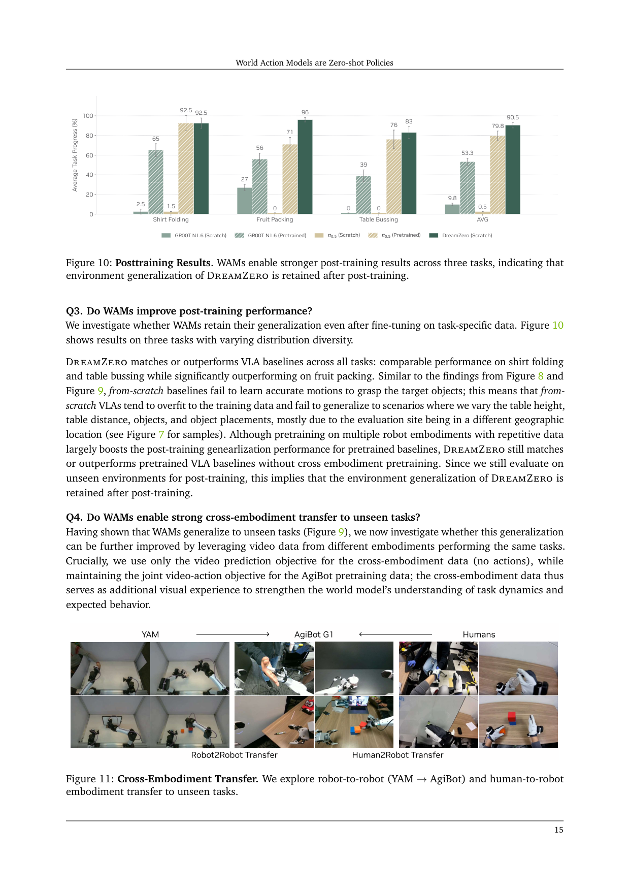
原文 caption：WAMs enable stronger post-training results across three tasks, indicating environment generalization of DreamZero is retained after post-training.
三个下游任务(叠衣 33h/水果打包 12h/收餐桌 40h)post-training 结果。DreamZero 叠衣和收餐桌持平或略胜 pretrained VLA,水果打包明显胜出(76% vs 56%)。post-training 仍在 unseen 环境评测,说明 DreamZero 环境泛化能力 fine-tune 后没丢——WAM 的隐性优势。
Cross-Embodiment 跨本体迁移
原文 caption：Robot-to-robot (YAM → AgiBot) and human-to-robot embodiment transfer to unseen tasks.
两设置:Robot2Robot 用 YAM 双臂 video-only(20min,无动作标签)共训;Human2Robot 用人类第一视角视频(12min,无动作标签)共训。两条都让 unseen tasks 从 38.3% 涨到 54%+。关键:WAM 能用无动作标签视频增益 policy——video prediction objective 本身强化 world model 对任务动态的理解,不需 action。打开人类视频 scaling 路径。
Few-shot 新本体适配
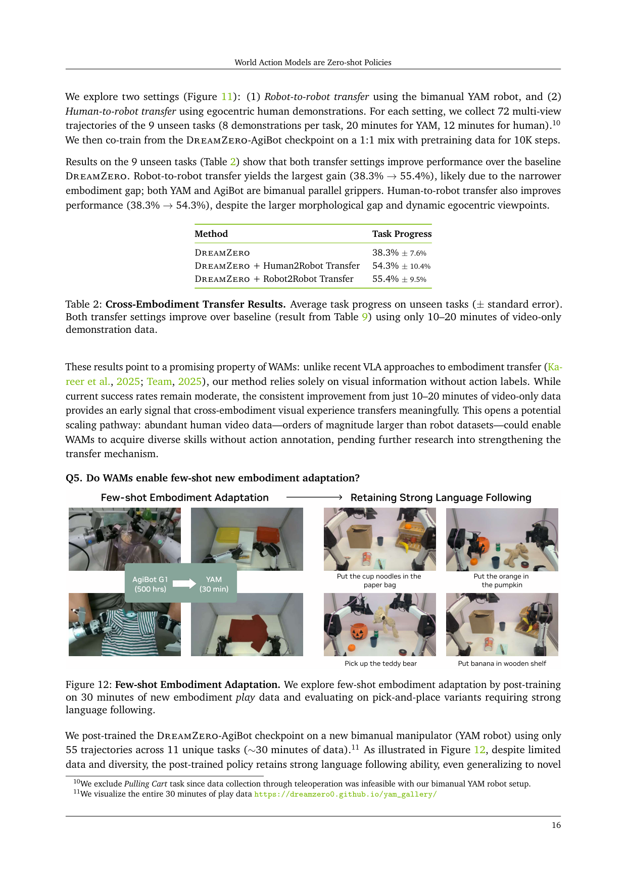
原文 caption：Few-shot embodiment adaptation by post-training on 30 minutes of new embodiment play data, evaluating on pick-and-place variants requiring strong language following.
AgiBot 上训好的 checkpoint 用 55 轨迹(~30min)YAM play data post-train,迁移到全新本体 YAM,保留 zero-shot 泛化(能处理南瓜/泰迪熊/笔/杯面/纸袋等未见物体)。论文称数据效率新标杆。机制假设:学的是 implicit IDM(从视觉未来反推动作),比直接 policy learning 更 sample-efficient。
为什么 AR 不选 bidirectional
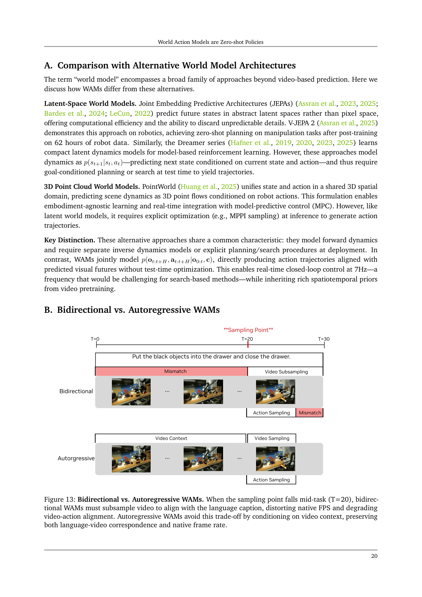
原文 caption：When sampling point falls mid-task (T=20), bidirectional WAMs must subsample video to align with language caption, distorting native FPS and degrading video-action alignment. AR avoids this by conditioning on video context.
双向模型要求固定长度。不 subsample,生成视频只覆盖任务片段,语言视频错位(mismatch 1/2);subsample 到任务区间,从任务中段(T=20)采样会扭曲原生帧率,video-action 对齐崩(mismatch)。AR 用视频上下文做条件,既保语言-视频对应又保原生帧率。这是 DreamZero 选 AR 的根本理由。
Attention mask 细节
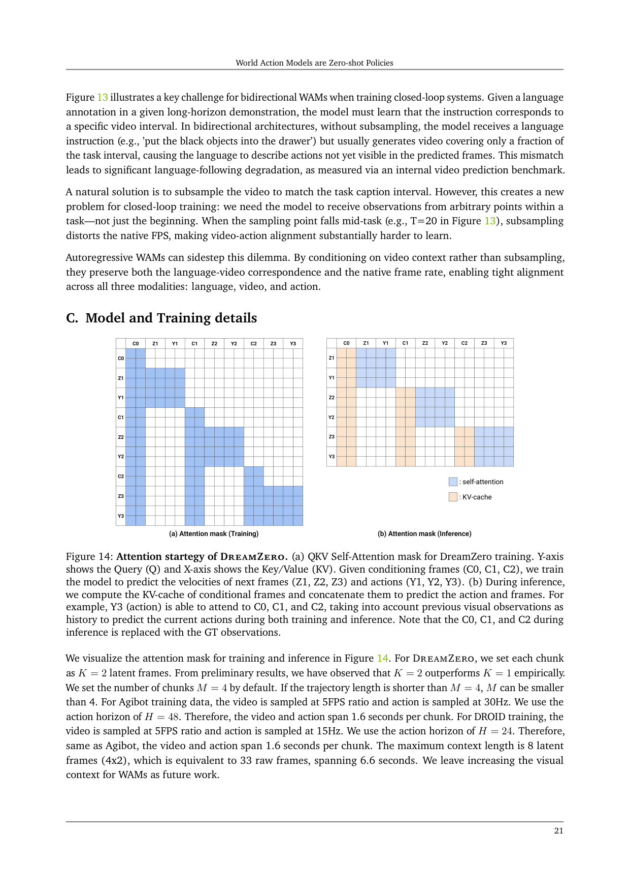
原文 caption：(a) QKV self-attention mask for training: given C0/C1/C2 conditioning, predict velocities of Z1/Z2/Z3 and Y1/Y2/Y3. (b) Inference: KV-cache of conditional frames concatenated; C0/C1/C2 during inference replaced with GT observations.
对应 chunk-wise teacher forcing 和 KV-cache 推理。训练下三角 mask 保证当前 chunk 能 attend 前面所有 clean context 但不看未来。推理 C0/C1/C2 换成 GT 观测,KV-cache 复用,Y3 能 attend C0/C1/C2——这就是'闭环用真实观测替换预测帧'的实现。是 Figure 4 推理部分的细节展开。
数据采集环境
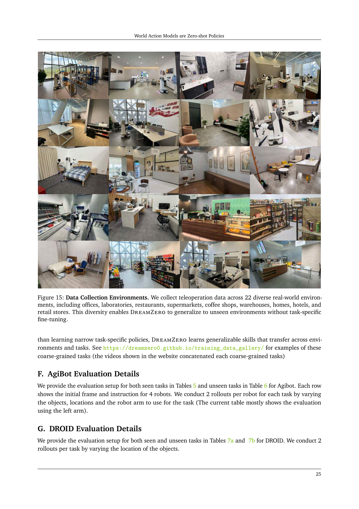
原文 caption：22 diverse real-world environments: offices, laboratories, restaurants, supermarkets, coffee shops, warehouses, homes, hotels.
22 个真实数据采集环境照片网格。是'数据多样性'的视觉证据,和 Figure 6 配合:Figure 6 给统计数字,Figure 15 给环境多样性证据。是 DreamZero 反直觉结论'多样性>重复性'的数据基础。
失败也对齐(关键 insight)
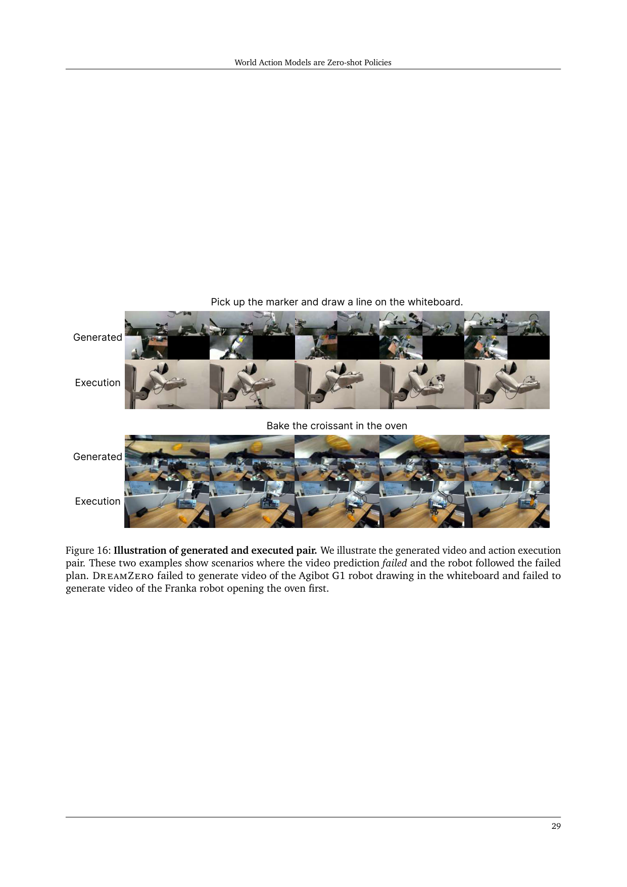
原文 caption：Generated video and action execution pair. Two examples where video prediction failed and robot followed the failed prediction faithfully.
两个失败案例。上行为模型生成的未来视频,下行为实际执行。模型生成的视频错了(如动作方向预测反),机器人忠实执行了错误轨迹。反向证明 action 和 video 对齐很紧——失败主要来自 video 预测错,action 提取本身没问题。这是论文最有力论断之一:'改进 policy 等价于改进 video backbone'。
🎧 音频版
时长 15:15 · Edge TTS
DreamZero：把视频模型变成零样本策略
2026 年 2 月 19 日，NVIDIA 的 Seonghyeon Ye 等人发布的论文，标题是 World Action Models are Zero-shot Policies。
这篇论文要解决一个很具体的问题：现有的 VLA 只能在语义层泛化——换物体、换指令能行；但换一个它没训练过的动作，比如解鞋带，它就失败。
为什么 VLA 做不到？因为 VLA 是从视觉语言模型 VLM 初始化的，它继承了 web 数据的语义先验，知道"可乐罐是什么、Taylor Swift 在哪"，但没有继承物理动态先验——它学到的是"看见什么就出什么动作"的映射，没有学"我这样做，世界会怎么变"。所以它必须靠大量重复示教，把每个技能覆盖一遍。
DreamZero 的核心命题是：如果你让模型既预测未来视频、又预测动作，让动作变成"从想象的未来里反推出来"的，那你就能从异质、非重复的真实数据里学到泛化策略。 这条路它走通了，还顺带把一个 14B 的视频扩散模型压到了 7 赫兹实时闭环。
它的输入和输出到底是什么
你需要在脑子里先建一个模块图。
输入有三路：视觉观测，当前和历史画面，如果是多视角，直接在通道维拼成一帧，不改主干；语言指令，一个冻结的文本编码器处理；本体感受，机器人自己的关节状态，走一个新增的、参数量很小的 state encoder。
输出有两路，是同时出来的：未来视频的 latent，每 chunk 出两个 latent 帧；以及一个 action chunk，Agibot 平台是 48 步动作，30 赫兹控制频率，DROID 平台是 24 步，15 赫兹。一个 chunk 跨度固定 1.6 秒。最大上下文能看 6.6 秒。
这两路输出共用同一个主干，这是 DreamZero 最关键的设计——它不是两个 head 各做各的。
输入到底怎么拼成一条序列
光说三路输入还不够具体，我把它拆成一条显式的拼接序列，你在脑子里能建出来。
序列大致长这样：开头是 <bos_context>，里面是历史 chunk 序列——每个 chunk 是一个 (video latent, action latent) 对，按时间从老到新排，比如 (C_1, A_1)、(C_2, A_2)，一直到当前的上下文边界。然后是 <eos_context>。接着 <bos_lang> 包语言指令经 text encoder，<eos_lang>。再 <bos_state> 包当前 chunk 的 proprioceptive state，<eos_state>。最后 <bos_chunk> 是当前要联合去噪的 [video latent z, action latent a] 对，<eos_chunk>。
这里有几个坑要特别说清，不然容易误解。第一，语言指令不是像 LLM 那样跟视觉 token 拼在一起做自回归——它是用 cross-attention 注入到每个 DiT block 里，是个条件，不是序列的一部分。真正做序列拼接的，是 chunk 级的 video 和 action 对。
第二，多视角不进入序列拼接，它在更早就被处理掉了——多个视角的图像在通道维拼成一张图，再一起过 VAE 编码成一个 video latent。所以从序列层面看，一个 chunk 就是一个 chunk，不区分视角。
第三，训练和推理时这条序列长得不一样。训练时，历史 chunk 是干净的 teacher-forcing context，里面是真实视频和真实动作的 latent。推理时，这些历史 chunk 的位置在 KV-cache 里被替换成了真实环境的观测——动作是模型自己生成的、但视频是真实世界给的。这就是闭环替换：序列结构没变，但 context 里的内容从"模型预测"换成了"真实观测"。
记住这条序列，后面听别的 WAM 论文你会反复遇到类似的拼接，区别往往就在 context 怎么组织、language 怎么注入、video 和 action 怎么耦合。DreamZero 的答案是：context 是 chunk 级 [video, action] 对，language 是 cross-attention，当前 chunk 的 video 和 action 在同一个 timestep 下联合去噪。
架构：一个 14B 的视频扩散模型，加最小的新参数
主干是 Wan2.1-I2V-14B，一个 image-to-video 的 diffusion 模型。DreamZero 的策略是尽量不动它——VAE、文本编码器、图像编码器全冻结，只新增三样小东西：state encoder、action encoder、action decoder。这样做的目的是保住视频模型从 web 视频里学到的物理先验。
训练用 flow matching，也就是让模型预测一个 velocity，把噪声移到干净样本。重点是它对 video latent 和 action latent 是联合去噪的：同一个 chunk 内，两者共享 timestep，一起插值、一起预测 velocity，loss 是一起算的。
结构上它选了 autoregressive，不是 bidirectional。这一点论文有专门的论证，值得讲。双向 diffusion 要求固定长度序列，但长程示教里语言指令往往只对应任务的一段。你不 subsample，生成的视频只覆盖任务片段，语言和视频对不上；你 subsample，在闭环里从任务中段采样会扭曲原生帧率，视频和动作就对不齐。autoregressive 用视频上下文做条件，既保住语言-视频对应，又保住原生帧率，三模态对齐才稳。顺带一提，AR 加 KV-cache，推理比双向快 3 到 4 倍。
给你一个数值 sense：这套模型到底多大
光说 14B 可能没感觉，我把维度念细一点。
主干 DiT 是 14B 参数，hidden dimension 5120，40 层 transformer block，每块 40 个注意力头，feedforward 维度 13824。视频输入分辨率是 480P，实际面积固定、长宽比跟输入图走，典型是 832×480。
VAE 是 Wan 自家的 3D causal VAE，把 raw 视频压到 latent：空间 8 倍下采样（832×480 → 104×60），时间 4 倍下采样（每 4 帧压成 1 个 latent 帧），latent 通道数 16。也就是说每帧 raw 视频大约对应 104×60×16 ≈ 10 万维的 latent，但时间维被压了 4 倍。
回到 DreamZero 的 chunk 设置：每个 chunk K=2 个 latent 帧，对应 8 个 raw 视频帧；视频采样率 5FPS，所以一个 chunk 跨 1.6 秒，跟前面说的 action chunk 跨度一致。默认 M=4 个 chunk 上下文，共 8 个 latent 帧 = 33 个 raw 帧 = 6.6 秒视觉记忆。AgiBot 上视频 5FPS、动作 30Hz、H=48；DROID 上视频 5FPS、动作 15Hz、H=24——两边 chunk 时长都精确锁在 1.6 秒。
动作那边是连续的相对关节位置，论文没给每维具体含义，但 Agibot G1 是双臂移动平台，自由度应该十几到二十几；DROID 用 Franka 单臂 7 自由度加夹爪。action latent 和 video latent 是在同一个 DiT 里联合去噪的，共享 timestep、共享 velocity 预测头——这是"joint"这个词的物理含义。
训练规模：AgiBot 和 DROID 都是 100K steps、global batch 128，更新所有 DiT 块加 state/action encoder/decoder，冻结 text/image encoder 和 VAE。论文试过 LoRA，结果不行，所以是全参数更新。
记住这套数字，后面听其它 WAM 论文时，你可以拿它当标尺：14B DiT、16 通道 latent、K=2/M=4、1.6 秒 chunk、6.6 秒上下文、100K steps × batch 128。这是个非常大的训练量。
真正让 WAM 能做实时控制的：闭环 KV-cache 替换
这是 DreamZero 区别于"纯视频生成器"最根本的一点，也是它配叫 policy 的原因。
纯 autoregressive 视频生成有个老毛病——误差累积，越生成越偏。DreamZero 的解法是在闭环里，每生成一个 chunk 的视频加动作、把动作执行掉之后，用真实环境的观测，把 KV-cache 里那个 chunk 的预测帧替换掉，再生成下一个 chunk。
也就是说，KV-cache 始终被真实观测不断纠正，误差不累积。视频模型在这里充当"想象下一步"的中间件，动作执行完立刻被真实世界校准。这是它能做 7 赫兹实时控制、而不只是停留在生成漂亮视频层面的根本。
38 倍加速是怎么堆出来的
一个 14B 的 diffusion 模型，naive 实现单卡要 5.7 秒一个 chunk，完全没法闭环。论文把加速拆成三层，我按性价比给你念一遍。
系统层：CFG 双卡并行，把 conditional 和 unconditional 两个前向分到两张卡，单步延迟降 47%；DiT caching，连续两步预测的 velocity 方向余弦相似度超过阈值就复用，把 16 步有效降到 4 步。
实现层：torch.compile 加 CUDA Graphs 消 CPU 开销；NVFP4 量化（Blackwell 上，敏感层 QKV 和 Softmax 保 FP8、非线性保 FP16）；attention 用 cuDNN、scheduler 搬到 GPU 消同步。
模型层：这就是 DreamZero-Flash，也是我认为这篇论文里最聪明的一个工程 trick，单独讲。
三层叠加：H100 上 9.6 倍，GB200 上 16.6 倍，加上 Flash 共 38 倍，把 5.7 秒压到 150 毫秒，7 赫兹闭环。
有一点要诚实说：DiT caching 和 NVFP4 这两项不是数学等价，论文只说 minimal quality loss，没给完整精度对照。这是我们读出的局限。
DreamZero-Flash：一个解耦 noise schedule 的小设计
问题是这样的。标准 DreamZero 训练时，video 和 action 共享 timestep，两者噪声级别一致。但你做 few-step 推理时——比如只跑 1 步——video 还没去噪干净，action 却要从干净的 video 里读条件。训练学和推理用对不上，action 就崩。naive 把 4 步砍到 1 步，table bussing 任务进度从 83% 掉到 52%。
Flash 的解法：训练时把 video 的 timestep 偏向高噪声——t_vid 等于 1 减 η，η 服从 Beta(7,1)，期望 t_vid 是 0.125，也就是模型主要在 video 很脏的条件下训练；action 的 timestep 还是 uniform。等于专门训练模型"video 还很噪时也能输出干净 action"，正好匹配 1 步推理的真实条件。
结果：1 步推理从 52% 恢复到 74%，只比 4 步 baseline 的 83% 低 9 个点，速度 2.33 倍。这是整个论文里杠杆比最高的一个设计。
数据哲学：多样性大于重复性
这点很反直觉，值得记住。同样 500 小时数据，一组是 diverse 的——22 个环境、7193 个 episode、平均每个 episode 4.4 分钟 42 个子任务；另一组是 repetitive 的——70 个任务，每个任务大量重复示教。在简单的 pick-and-place 上，diverse 是 50%，repetitive 是 33%。
论文给的解释是：video prediction 主要是从预训练继承的，真正要在机器人数据上学的是 inverse dynamics——从视觉未来反推动作。inverse dynamics 要稳，就需要多样的状态-动作对应，repetitive 数据天然没有。
关键结果：不仅赢，而且赢在 VLA 最弱的地方
我挑几个有对照的数字。
Seen tasks，unseen 环境 + unseen 物体：Agibot G1 上，DreamZero 平均 task progress 62.2%，最好的 pretrained VLA baseline 是 27.4%。注意这些 baseline 是在数千小时跨本体数据上预训练过的，DreamZero 只用了 500 小时自采数据。从零训的 VLA 基本是 0。
Unseen tasks，10 个训练里没出现过的任务，比如解鞋带、熨衣服、画画、握手：Agibot 上 DreamZero 39.5%，pretrained VLA 是 16.3%。DROID-Franka 上 success rate DreamZero 22.5%，GR00T N1.6 pretrained 是 12.5%，π0.5 是 7.5%。
跨本体迁移：用 20 分钟 YAM 机器人的 video-only 数据（没有动作标签）共训，unseen tasks 从 38.3% 提到 55.4%；用 12 分钟人类第一视角视频，从 38.3% 提到 54.3%。两条路都涨，robot-to-robot 涨得更多，因为形态更接近。
Few-shot 新本体适配：把 Agibot 上训好的 checkpoint，用 55 轨迹、约 30 分钟 YAM play data post-train，就能迁移到全新机器人 YAM 上，还保留 zero-shot 泛化。论文说这是数据效率的新标杆。
一个最值得记住的 insight
论文里有一句话，我建议你重点记："Most DreamZero failures stem from video generation errors rather than action prediction—the policy faithfully executes whatever trajectory the video predicts."
翻译过来：DreamZero 失败，主要是 video 预测错了，而不是 action 提取错了——policy 忠实执行 video 描述的轨迹。
这句话分量很重。它意味着两件事：第一，动作和视频已经对齐得很紧，模型没有"乱动"；第二，改进 policy 等价于改进 video backbone。这给了 WAM 路线一个非常直接的 scaling law 论证——video 模型越强，policy 就越强。这是 VLA 路线给不出的论证。
局限：别替它过度外推
论文自己承认的：它还是 System 1，视觉记忆只有 6.6 秒，长程推理要靠 System 2 planner 或更长上下文；高精度任务（亚厘米级，比如钥匙插入）仍是 behavior cloning 的通病，diverse pretraining 反而稀释了密集示教；7 赫兹依赖 2 张 GB200，比消费级 GPU 上的 VLA（20 赫兹以上）还是贵。
我们读出的：跨本体实验里 YAM 和 Agibot 都是双臂 parallel gripper，形态接近，收益部分来自此；人类视频迁移在形态差异更大时是否仍成立，论文没证。seen 和 unseen task 的边界依赖人工定义（动作加物体类型），有主观空间。
所以，DreamZero 是 WAM 路线的一个强证据，但它支持的是"world 和 action 应该一起建模"这个方向，不等于工业现场的连续运行、节拍、干预率和 ROI 已经解决。
一句话收束
DreamZero 把一个 14B 的视频扩散模型，通过联合 video-action 训练、闭环 KV-cache 替换、和一套包括 Flash 在内的加速栈，变成了 7 赫兹实时闭环的 zero-shot policy。它最有力的论证落在"失败来自视频、不来自动作"这一点上——这把 policy 的改进问题，变成了 video backbone 的改进问题。